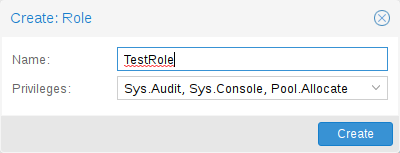

In order for a user to perform an action (such as listing, modifying or deleting parts of a VM’s configuration), the user needs to have the appropriate permissions.
Proxmox VE uses a role and path based permission management system. An entry in the permissions table allows a user, group or token to take on a specific role when accessing an object or path. This means that such an access rule can be represented as a triple of (path, user, role), (path, group, role) or (path, token, role), with the role containing a set of allowed actions, and the path representing the target of these actions.
A role is simply a list of privileges. Proxmox VE comes with a number of predefined roles, which satisfy most requirements.
Administrator: has full privileges
NoAccess: has no privileges (used to forbid access)
PVEAdmin: can do most tasks, but has no rights to modify system settings
(Sys.PowerMgmt, Sys.Modify, Realm.Allocate) or permissions
(Permissions.Modify)
PVEAuditor: has read only access
PVEDatastoreAdmin: create and allocate backup space and templates
PVEDatastoreUser: allocate backup space and view storage
PVEMappingAdmin: manage resource mappings
PVEMappingUser: view and use resource mappings
PVEPoolAdmin: allocate pools
PVEPoolUser: view pools
PVESDNAdmin: manage SDN configuration
PVESDNUser: access to bridges/vnets
PVESysAdmin: audit, system console and system logs
PVETemplateUser: view and clone templates
PVEUserAdmin: manage users
PVEVMAdmin: fully administer VMs
PVEVMUser: view, backup, configure CD-ROM, VM console, VM power management
You can see the whole set of predefined roles in the GUI.
You can add new roles via the GUI or the command line.

From the GUI, navigate to the Permissions → Roles tab from Datacenter and click on the Create button. There you can set a role name and select any desired privileges from the Privileges drop-down menu.
To add a role through the command line, you can use the pveum CLI tool, for example:
pveum role add VM_Power-only --privs "VM.PowerMgmt VM.Console" pveum role add Sys_Power-only --privs "Sys.PowerMgmt Sys.Console"
Roles starting with PVE are always builtin, custom roles are not
allowed use this reserved prefix.
A privilege is the right to perform a specific action. To simplify management, lists of privileges are grouped into roles, which can then be used in the permission table. Note that privileges cannot be directly assigned to users and paths without being part of a role.
We currently support the following privileges:
Group.Allocate: create/modify/remove groups
Mapping.Audit: view resource mappings
Mapping.Modify: manage resource mappings
Mapping.Use: use resource mappings
Permissions.Modify: modify access permissions
Pool.Allocate: create/modify/remove a pool
Pool.Audit: view a pool
Realm.AllocateUser: assign user to a realm
Realm.Allocate: create/modify/remove authentication realms
SDN.Allocate: manage SDN configuration
SDN.Audit: view SDN configuration
Sys.Audit: view node status/config, Corosync cluster config, and HA config
Sys.Console: console access to node
Sys.Incoming: allow incoming data streams from other clusters (experimental)
Sys.Modify: create/modify/remove node network parameters
Sys.PowerMgmt: node power management (start, stop, reset, shutdown, …)
Sys.Syslog: view syslog
User.Modify: create/modify/remove user access and details.
SDN.Use: access SDN vnets and local network bridges
VM.Allocate: create/remove VM on a server
VM.Audit: view VM config
VM.Backup: backup/restore VMs
VM.Clone: clone/copy a VM
VM.Config.CDROM: eject/change CD-ROM
VM.Config.CPU: modify CPU settings
VM.Config.Cloudinit: modify Cloud-init parameters
VM.Config.Disk: add/modify/remove disks
VM.Config.HWType: modify emulated hardware types
VM.Config.Memory: modify memory settings
VM.Config.Network: add/modify/remove network devices
VM.Config.Options: modify any other VM configuration
VM.Console: console access to VM
VM.GuestAgent.Audit: issue informational QEMU guest agent commands
VM.GuestAgent.FileRead: read files from the guest via QEMU guest agent
VM.GuestAgent.FileSystemMgmt: freeze/thaw/trim file systems via QEMU guest
agent
VM.GuestAgent.FileWrite: write files in the guest via QEMU guest agent
VM.GuestAgent.Unrestricted: issue arbitrary QEMU guest agent commands
VM.Migrate: migrate VM to alternate server on cluster
VM.PowerMgmt: power management (start, stop, reset, shutdown, …)
VM.Replicate: configure and run guest replication
VM.Snapshot.Rollback: rollback VM to one of its snapshots
VM.Snapshot: create/delete VM snapshots
Datastore.Allocate: create/modify/remove a datastore and delete volumes
Datastore.AllocateSpace: allocate space on a datastore
Datastore.AllocateTemplate: allocate/upload templates and ISO images
Datastore.Audit: view/browse a datastore
Both Permissions.Modify and Sys.Modify should be handled with
care, as they allow modifying aspects of the system and its configuration that
are dangerous or sensitive.
Carefully read the section about inheritance below to understand how assigned roles (and their privileges) are propagated along the ACL tree.
Access permissions are assigned to objects, such as virtual machines, storages or resource pools. We use file system like paths to address these objects. These paths form a natural tree, and permissions of higher levels (shorter paths) can optionally be propagated down within this hierarchy.
Paths can be templated. When an API call requires permissions on a
templated path, the path may contain references to parameters of the API
call. These references are specified in curly braces. Some parameters are
implicitly taken from the API call’s URI. For instance, the permission path
/nodes/{node} when calling /nodes/mynode/status requires permissions on
/nodes/mynode, while the path {path} in a PUT request to /access/acl
refers to the method’s path parameter.
Some examples are:
/nodes/{node}: Access to Proxmox VE server machines
/vms: Covers all VMs
/vms/{vmid}: Access to specific VMs
/storage/{storeid}: Access to a specific storage
/pool/{poolname}: Access to resources contained in a specific pool
/access/groups: Group administration
/access/realms/{realmid}: Administrative access to realms
As mentioned earlier, object paths form a file system like tree, and permissions can be inherited by objects down that tree (the propagate flag is set by default). We use the following inheritance rules:
NoAccess cancels all other roles on a given path.
Additionally, privilege separated tokens can never have permissions on any given path that their associated user does not have.
Pools can be used to group a set of virtual machines and datastores. You can
then simply set permissions on pools (/pool/{poolid}), which are inherited by
all pool members. This is a great way to simplify access control.
The required API permissions are documented for each individual method, and can be found at https://pve.proxmox.com/pve-docs/api-viewer/.
The permissions are specified as a list, which can be interpreted as a tree of logic and access-check functions:
["and", <subtests>...] and ["or", <subtests>...]
and) or any(or) further element in the current list has to be true.
["perm", <path>, [ <privileges>... ], <options>...]
path is a templated parameter (see
Objects and Paths). All (or, if the any
option is used, any) of the listed
privileges must be allowed on the specified path. If a require-param
option is specified, then its specified parameter is required even if the
API call’s schema otherwise lists it as being optional.
["userid-group", [ <privileges>... ], <options>...]
The caller must have any of the listed privileges on /access/groups. In
addition, there are two possible checks, depending on whether the
groups_param option is set:
groups_param is set: The API call has a non-optional groups parameter
and the caller must have any of the listed privileges on all of the listed
groups.
groups_param is not set: The user passed via the userid parameter
must exist and be part of a group on which the caller has any of the listed
privileges (via the /access/groups/<group> path).
["userid-param", "self"]
userid parameter must refer to the
user performing the action (usually in conjunction with or, to allow
users to perform an action on themselves, even if they don’t have elevated
privileges).
["userid-param", "Realm.AllocateUser"]
Realm.AllocateUser access to /access/realm/<realm>, with
<realm> referring to the realm of the user passed via the userid
parameter. Note that the user does not need to exist in order to be
associated with a realm, since user IDs are passed in the form of
<username>@<realm>.
["perm-modify", <path>]
The path is a templated parameter (see
Objects and Paths). The user needs either the
Permissions.Modify privilege or,
depending on the path, the following privileges as a possible substitute:
/storage/...: requires 'Datastore.Allocate`
/vms/...: requires 'VM.Allocate`
/pool/...: requires 'Pool.Allocate`
If the path is empty, Permissions.Modify on /access is required.
If the user does not have the Permissions.Modify privilege, they can only
delegate subsets of their own privileges on the given path (e.g., a user with
PVEVMAdmin could assign PVEVMUser, but not PVEAdmin).